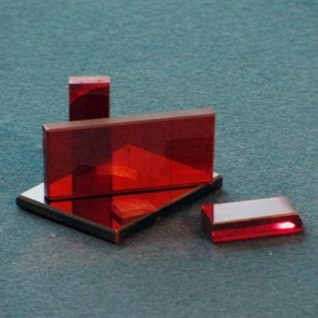
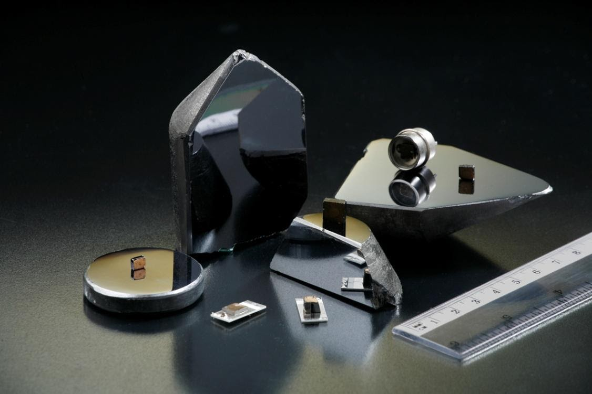

НАУКОВО-ТЕХНІЧНІ РОЗРОБКИ
Інститут монокристалів має власний парк ростового і іншого обладнання для проведення технологічних експериментів з розробки технології вирощування кристалів і синтезу кераміки, а також випуску експериментальних серій даних матеріалів.
Особливе місце в розробках Інституту займає лейкосапфір. Розроблено технологію вирощування лейкосапфіру методом горизонтальної спрямованої кристалізації (ГСК) в захисному газовому середовищі та технології виготовлення оптичних виробів з них.
Особливе місце в розробках Інституту займає лейкосапфір. Розроблено технологію вирощування лейкосапфіру методом горизонтальної спрямованої кристалізації (ГСК) в захисному газовому середовищі та технології виготовлення оптичних виробів з них.
Ростове ГСК обладнання
Шліфувально-полірувальне обладнання
Вихідна пластина великогабаритного лейкосапфіру, що вирощено за технологією ГСК
Елементи з лейкосапфіру для прозорої броні
Вікно з прозорої броні розміром 490х256х56 мм 3 для БТР-4
Світлофільтри на сапфірових підкладках розміром 152х79х3мм3 для станцій захисту «Адрос» літальних апаратів від ракет з інфрачервоними головками самонаведення
Оптичні вікна різних форм і розмірів
Підкладки для виготовлення LED
Сапфіровий обтічник для головок ракет з самонаведенням в інфрачервоному діапазоні
Вихідний злиток та заготівки діаметром до 100 мм для виготовлення активних лазерних елементів з Ті:сапфіру (FOM > 100-300)
Експериментальні зразки активних лазерних елементів YAG:Er,Yb та люмінофорів YAG:Ce
Полікристалічний германій для інфрачервоної оптики, що вирощено за ГСК технологією
Експериментальний злиток та зразки пластин з полікристалічного германію:
- Питомий опір (Ом·см) 4…40
- Коефіцієнт пропускання (%) пластини 5 мм в діапазоні 5…12 мкм ≥ 45
- Перспективні габарити (350-500)х350х10мм3
Вироби з профільованого лейкосапфіру, що вирощено за технологією Степанова
Утримувачі затравок для використання в установках вирощування кремнію та інших кристалів до 1800°С
Тиглі для роботи при температурах до 2000°С
Чохли та двоканальні ізоляційні трубки для металевих термопар
Лазерна кераміка на основі ітрій-алюмінієвого гранату, що легована іонами неодиму або ітербію (Nd3+ :YAG, Yb3+:YAG)
Спектри лінійного оптичного пропускання кераміки Nd3+:YAG та Yb3+:YAG
Експериментальні зразки лазерної кераміки Nd3+:YAG та Yb3+:YAG
Кристали групи А ІІ В IV , що вирощено за технологією Бриджмена
-
Лазерні кристали для середнього інфрачервоного діапазону (1…20 мкм) на основі ZnSe
Доступні розміри оптичних елементів ZnS, ZnSe: діаметр до 50 мм, товщина від 2 до 20 мм. Проводяться роботи з підвищення розмірів злитків ZnSe , CdSe та кристали твердих розчинів ZnMgSe, CdMnTe і ін., що леговано іонами перехідних металів (Cr 2+ , Fe 2+ ) є активними середовищами для твердотільних ІЧ лазерів у спектральному діапазоні 2…6 мкм.
-
Кристали твердих розчинів CdZnTe та CdМnTe
Радіаційні детектори для реєстрації іонізуючого (гамма) випромінювання з можливістю функціонування при кімнатній температурі.